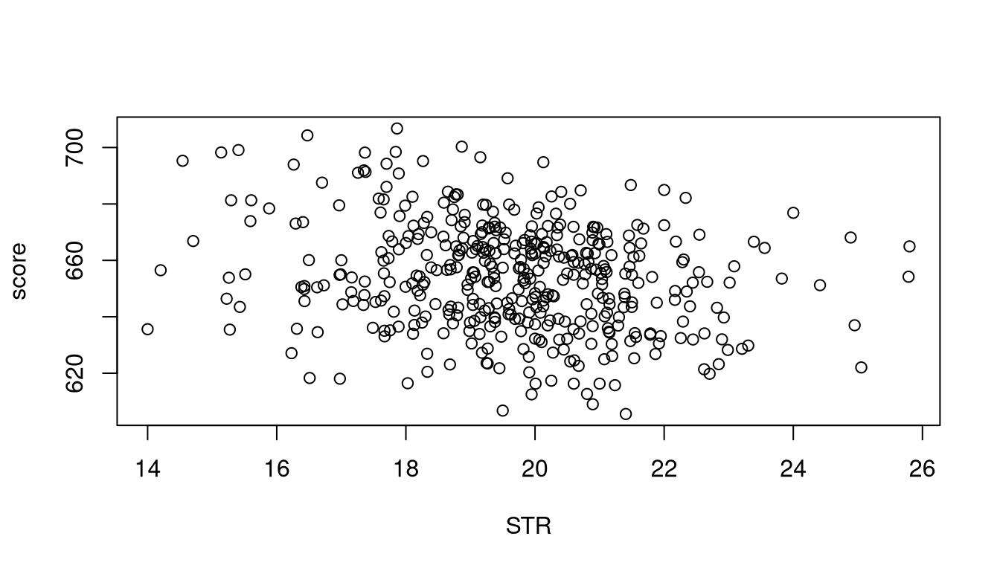

| person | wage | education | female |
|---|---|---|---|
| 1 | 18.22 | 16 | 1 |
| 2 | 23.85 | 18 | 0 |
| 3 | 10.00 | 16 | 1 |
| 4 | 6.39 | 13 | 0 |
| 5 | 7.42 | 14 | 0 |
4 Data
4.1 Datasets
A univariate dataset is a sequence of observations Y_1, \ldots, Y_n. These n observations can be organized into the data vector \boldsymbol Y, represented as \boldsymbol Y = (Y_1, \ldots, Y_n)'. For example, if you conduct a survey and ask five individuals about their hourly earnings, your data vector might look like \boldsymbol Y = \begin{pmatrix} 18.22 \\ 23.85 \\ 10.00 \\ 6.39 \\ 7.42 \end{pmatrix}. Typically we have data on more than one variable, such as years of education and the gender. Categorical variables are often encoded as dummy variables, which are binary variables. The female dummy variable is defined as 1 if the gender of the person is female and 0 otherwise.
A k-variate dataset (or multivariate dataset) is a collection of n vectors \boldsymbol X_1, \ldots, \boldsymbol X_n containing data on k variables. The i-th vector \boldsymbol X_i = (X_{i1}, \ldots, X_{ik})' contains the data on all k variables for individual i. Thus, X_{ij} represents the value for the j-th variable of individual i.
The full k-variate dataset is structured in the n \times k data matrix \boldsymbol X: \boldsymbol X = \begin{pmatrix} \boldsymbol X_1' \\ \vdots \\ \boldsymbol X_n' \end{pmatrix} = \begin{pmatrix} X_{11} & \ldots & X_{1k} \\ \vdots & \ddots & \vdots \\ X_{n1} & \ldots & X_{nk} \end{pmatrix} The i-th row in \boldsymbol X corresponds to the values from \boldsymbol X_i. Since \boldsymbol X_i is a column vector, we use the transpose notation \boldsymbol X_i', which is a row vector.
The data matrix for our example is \boldsymbol X = \begin{pmatrix} 18.22 & 16 & 1 \\ 23.85 & 18 & 0 \\ 10.00 & 16 & 1 \\ 6.39 & 13 & 0 \\ 7.42 & 14 & 0 \end{pmatrix} with data vectors \boldsymbol X_1 = \begin{pmatrix} 18.22 \\ 16 \\ 1 \end{pmatrix}, \ \boldsymbol X_2 = \begin{pmatrix} 23.85 \\ 18 \\ 0 \end{pmatrix}, \ \ldots \ .
Vector and matrix algebra provide a compact mathematical representation of multivariate data and an efficient framework for analyzing and implementing statistical methods. We will use matrix algebra frequently throughout this course.
To refresh or enhance your knowledge of matrix algebra, please consult the following resources:
Crash Course on Matrix Algebra:
Section 19.1 of the Stock and Watson textbook also provides a brief overview of matrix algebra concepts.
4.2 R programming language
The best way to learn statistical methods is to program and apply them yourself. Throughout this course, we will use the R programming language for implementing empirical methods and analyzing real-world datasets.
If you are just starting with R, it is crucial to familiarize yourself with its basics. Here’s an introductory tutorial, which contains a lot of valuable resources:
Getting Started with R:
For those new to R, I also recommend the interactive R package SWIRL, which offers an excellent way to learn directly within the R environment. Additionally, a highly recommended online book to learn R programming is Hands-On Programming with R.
One of the best features of R is its extensive ecosystem of packages contributed by the statistical community. You find R packages for almost any statistical method out there and many statisticians provide R packages to accompany their research.
One of the most frequently used packages in applied econometrics is the AER package (“Applied Econometrics with R”), which provides a comprehensive collection of inferential methods for linear models. You can install the package with the command install.packages("AER") and you can load it with
library(AER)at the beginning of your code. We will explore several additional packages in the course of the lecture.
4.3 Datasets in R
R includes many built-in datasets and packages of datasets that can be loaded directly into your R environment. For illustration, we consider the CASchools dataset available in the AER package. This dataset is used in the Stock and Watson textbook Introduction to Econometrics in Sections 4–8. It contains information on various characteristics of schools in California, such as test scores, teacher salaries, and student demographics. The data were collected in 1998.
The dataset contains the following variables:
| Variable | Description |
|---|---|
| district | School district ID |
| school | School name |
| county | County name |
| grades | Grade span: K-6 or K-8 |
| students | Student count |
| teachers | Teacher count |
| calworks | % of CalWorks students |
| lunch | % receiving free lunch |
| computer | Number of computers |
| expenditure | Expenditure per student |
| income | District average income (thousands $) |
| english | % of English learners |
| read | Average reading score |
| math | Average math score |
To load this dataset into your R session, simply use:
data(CASchools, package = "AER")The Environment pane in RStudio’s top-right corner displays all objects currently in your workspace, including the CASchools dataset. You can click on CASchools to open a table viewer and explore its contents. To get a description of the dataset, use the ?CASchools command. The head() function displays its first few rows:
head(CASchools) district school county grades students teachers
1 75119 Sunol Glen Unified Alameda KK-08 195 10.90
2 61499 Manzanita Elementary Butte KK-08 240 11.15
3 61549 Thermalito Union Elementary Butte KK-08 1550 82.90
4 61457 Golden Feather Union Elementary Butte KK-08 243 14.00
5 61523 Palermo Union Elementary Butte KK-08 1335 71.50
6 62042 Burrel Union Elementary Fresno KK-08 137 6.40
calworks lunch computer expenditure income english read math
1 0.5102 2.0408 67 6384.911 22.690001 0.000000 691.6 690.0
2 15.4167 47.9167 101 5099.381 9.824000 4.583333 660.5 661.9
3 55.0323 76.3226 169 5501.955 8.978000 30.000002 636.3 650.9
4 36.4754 77.0492 85 7101.831 8.978000 0.000000 651.9 643.5
5 33.1086 78.4270 171 5235.988 9.080333 13.857677 641.8 639.9
6 12.3188 86.9565 25 5580.147 10.415000 12.408759 605.7 605.4The CASchools dataset is stored as a data.frame, R’s most common data storage class for tabular data as in the data matrix \boldsymbol X. It organizes data in the form of a table, with variables as columns and observations as rows.
class(CASchools)[1] "data.frame"To inspect the structure of your dataset, you can use str():
str(CASchools)'data.frame': 420 obs. of 14 variables:
$ district : chr "75119" "61499" "61549" "61457" ...
$ school : chr "Sunol Glen Unified" "Manzanita Elementary" "Thermalito Union Elementary" "Golden Feather Union Elementary" ...
$ county : Factor w/ 45 levels "Alameda","Butte",..: 1 2 2 2 2 6 29 11 6 25 ...
$ grades : Factor w/ 2 levels "KK-06","KK-08": 2 2 2 2 2 2 2 2 2 1 ...
$ students : num 195 240 1550 243 1335 ...
$ teachers : num 10.9 11.1 82.9 14 71.5 ...
$ calworks : num 0.51 15.42 55.03 36.48 33.11 ...
$ lunch : num 2.04 47.92 76.32 77.05 78.43 ...
$ computer : num 67 101 169 85 171 25 28 66 35 0 ...
$ expenditure: num 6385 5099 5502 7102 5236 ...
$ income : num 22.69 9.82 8.98 8.98 9.08 ...
$ english : num 0 4.58 30 0 13.86 ...
$ read : num 692 660 636 652 642 ...
$ math : num 690 662 651 644 640 ...The dataset contains variables of different types: chr for character/text data, Factor for categorical data, and num for numeric data.
The variable students contains the total number of students enrolled in a school. It is the fifth variable in the data set. To access the variable as a vector, you can type CASchools[,5] (the fifth column in your data matrix), or CASchools[,"students"], or simply CASchool$students.
If you want to select the variables students and teachers, you can type CASchools[,c("students", "teachers")]. We can define our own dataframe mydata that contains a selection of variables:
students teachers english income math read
1 195 10.90 0.000000 22.690001 690.0 691.6
2 240 11.15 4.583333 9.824000 661.9 660.5
3 1550 82.90 30.000002 8.978000 650.9 636.3
4 243 14.00 0.000000 8.978000 643.5 651.9
5 1335 71.50 13.857677 9.080333 639.9 641.8
6 137 6.40 12.408759 10.415000 605.4 605.7The pipe operator |> efficiently chains commands. It passes the output of one function as the input to another. For example, mydata |> head() gives the same output as head(mydata).
A convenient alternative to select a subset of variables of your dataframe is the select() function from the dplyr package. Let’s chain the select() and head() function:
students teachers english income math read
1 195 10.90 0.000000 22.690001 690.0 691.6
2 240 11.15 4.583333 9.824000 661.9 660.5
3 1550 82.90 30.000002 8.978000 650.9 636.3
4 243 14.00 0.000000 8.978000 643.5 651.9
5 1335 71.50 13.857677 9.080333 639.9 641.8
6 137 6.40 12.408759 10.415000 605.4 605.7Piping in R makes code more readable by allowing you to read operations from left to right in a natural order, rather than nesting functions inside each other from the inside out.
We can easily add new variables to our dataframe, for instance, the student-teacher ratio (the total number of students per teacher) and the average test score (average of the math and reading scores):
# compute student-teacher ratio and append it to mydata
mydata$STR = mydata$students/mydata$teachers
# compute test score and append it to mydata
mydata$score = (mydata$read+mydata$math)/2 The variable english indicates the proportion of students whose first language is not English and who may need additional support. We might be interested in the dummy variable HiEL, which indicates whether the proportion of English learners is above 10 percent or not:
# append HiEL to mydata
mydata$HiEL = (mydata$english >= 10) |> as.numeric()Note that mydata$english >= 10 is a logical expression with either TRUE or FALSE values. The command as.numeric() creates a dummy variable by translating TRUE to 1 and FALSE to 0.
Scatterplots provide further insights:
plot(score~STR, data = mydata)
The option par(mfrow = c(1,2)) allows to display multiple plots side by side. Try what happens if you replace c(1,2) with c(2,1).